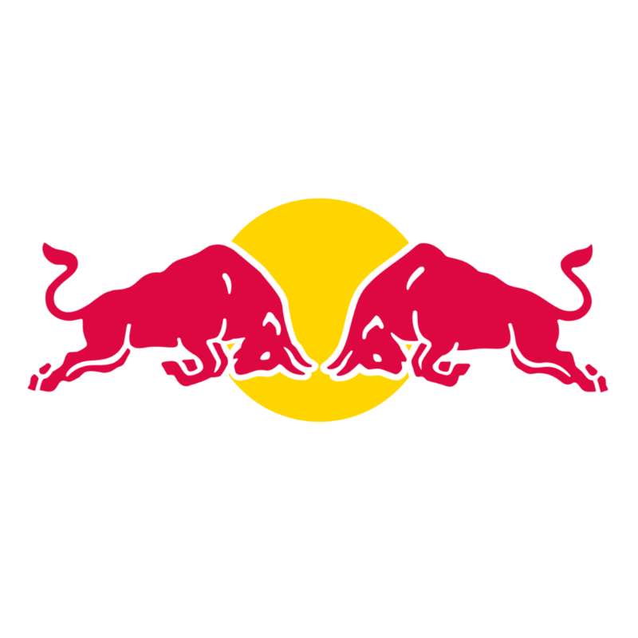

Oracle Red Bull Racing

Red Bull Racing es una escudería austriaca de Fórmula 1 con base en Milton Keynes, Inglaterra, de la empresa de la bebida energética Red Bull. La compañía adquirió la escudería Jaguar Racing por 110 000 000$, cuando la propietaria anterior de este equipo
Ford Motor Company, anunció su retirada de la máxima categoría del automovilismo.
Red Bull también tiene otro equipo subsidiario de Fórmula 1, llamado Scuderia AlphaTauri, conocida hasta 2019 como Scuderia Toro Rosso, con sede central en Faenza (Italia) desde la cual los jóvenes pilotos dan posteriormente
el salto al primer equipo.Compite desde 2005 y en sus dos primeras temporadas participaba con licencia británica.
Actualmente el equipo de Red Bull Racing cuenta con dos pilotos principales y un tercer piloto reserva
que pilota en su equipo subsidiario.

Max Verstappen - Es un piloto de automovilismo neerlandés nacido en Bélgica. Fue campeón del Campeonato Mundial de Karting en 2013. Es piloto de Fórmula 1 desde 2015, debutando con la escudería Toro Rosso. Ha sido tricampeón
del Campeonato Mundial de Fórmula 1 en 2021, 2022 y 2023.
Es el cuarto piloto con mayor número de victorias en la historia de la categoría con 54 grandes premios ganados y el piloto más joven en liderar una vuelta
durante un Gran Premio de Fórmula 1, el ganador más joven de un Gran Premio (18 años 7 meses y 15 días), y el piloto más joven en competir en la historia de esta categoría, ya que hizo su debut con 17 años y 166 días con
la Scuderia Toro Rosso.
Pilota con el número 1.
| Pais de Procedencia | Paises Bajos |
| Podios | 98 |
| Puntos totales | 2586.5 |
| Campeonatos | 3 |
| Mejor posicion de carrera | 1º |
| Mejor posicion de salida | 1º |
| Fecha de Nacimiento | 30/09/1997 |

Sergio "Checo" Perez - Es un piloto mexicano.
Actualmente es piloto de Red Bull en Fórmula 1, resultando subcampeón en 2023 y tercero en 2022. Comenzó su carrera en 2004; en la Fórmula 3 Británica fue campeón
de clase nacional en 2007. En 2009 debutó en la GP2 Series y al año siguiente fue subcampeón.
Pilota con el número
11.
| Pais de Procedencia | Mexico |
| Podios | 35 |
| Puntos totales | 1486 |
| Campeonatos | 0 |
| Mejor posicion de carrera | 1º |
| Mejor posicion de salida | 1º |
| Fecha de Nacimiento | 26/01/1990 |